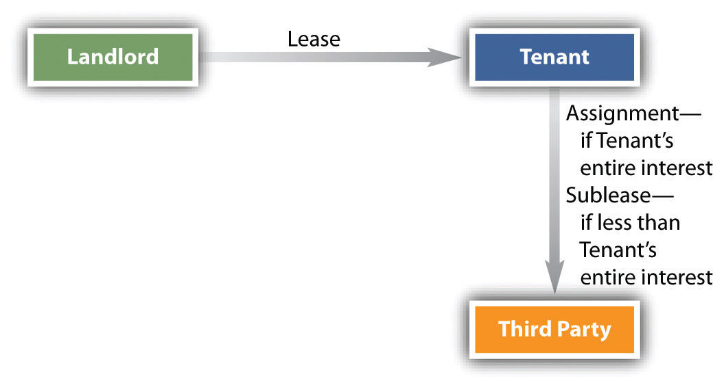

At common law, the interests of the landlord and tenant may be transferred freely unless (1) the tenancy is at will; (2) the lease requires either party to perform significant personal services, which would be substantially less likely to be performed if the interest was transferred; or (3) the parties agree that the interest may not be transferred.
When the landlord sells his interest, the purchaser takes subject to the lease. If there are tenants with leases in an apartment building, the new landlord may not evict them simply because he has taken title. The landlord may divide his interest as he sees fit, transferring all or only part of his entire interest in the property. He may assign his right to the rent or sell his reversionary interest in the premises. For instance, Simone takes a three-year lease on an apartment near the university. Simone’s landlord gives his aged uncle his reversionary interest for life. This means that Simone’s landlord is now the uncle, and she must pay him rent and look to him for repairs and other performances owed under the lease. When Simone’s lease terminates, the uncle will be entitled to rent the premises. He does so, leasing to another student for three years. One year later, the uncle dies. His nephew (Simone’s original landlord) has the reversionary interest and so once again becomes the landlord. He must perform the lease that the uncle agreed to with the new student, but when that lease expires, he will be free to rent the premises as he sees fit.
Why would a tenant be interested in transferring her leasehold interest? For at least two reasons: she might need to move before her lease expired, or she might be able to make money on the leasehold itself. In recent years, many companies in New York have discovered that their present leases were worth far more to them by moving out than staying in. They had signed long-term leases years ago when the real estate market was glutted and were paying far less than current market prices. By subletting the premises and moving to cheaper quarters, they could pocket the difference between their lease rate and the market rate they charged their subtenants.
The tenant can transfer her interest in the lease by assigning or by subletting. In an assignmentThe tenant transfers all interest in the premises, along with all obligations., the tenant transfers all interest in the premises and all obligations. Thus the assignee-tenant is duty bound to pay the landlord the periodic rental and to perform all other provisions in the lease. If the assignee defaulted, however, the original tenant would remain liable to the landlord. In short, with an assignment, both assignor and assignee are liable under the lease unless the landlord releases the assignor. By contrast, a subleaseA transfer of something less than the entire leasehold interest. is a transfer of something less than the entire leasehold interest (see Figure 32.1 "Assignment vs. Sublease"). For instance, the tenant might have five years remaining on her lease and sublet the premises for two years, or she might sublet the ground floor of a four-story building. Unlike an assignee, the subtenant does not step into the shoes of the tenant and is not liable to the landlord for performance of the tenant’s duties. The subtenant’s only obligations are to the tenant. What distinguishes the assignment from the sublease is not the name but whether or not the entire leasehold interest has been transferred. If not, the transfer is a sublease.
Figure 32.1 Assignment vs. Sublease
Many landlords include clauses in their leases prohibiting assignments or subleases, and these clauses are generally upheld. But the courts construe them strictly, so that a provision barring subleases will not be interpreted to bar assignments.
The interests of landlords and tenants can be freely transferred unless the parties agree otherwise or unless there is a tenancy at will. If the tenant assigns her leasehold interest, she remains liable under the lease unless the landlord releases her. If less than the entire leasehold interest is transferred, it is a sublease rather than an assignment. But the original lease may prohibit either or both.